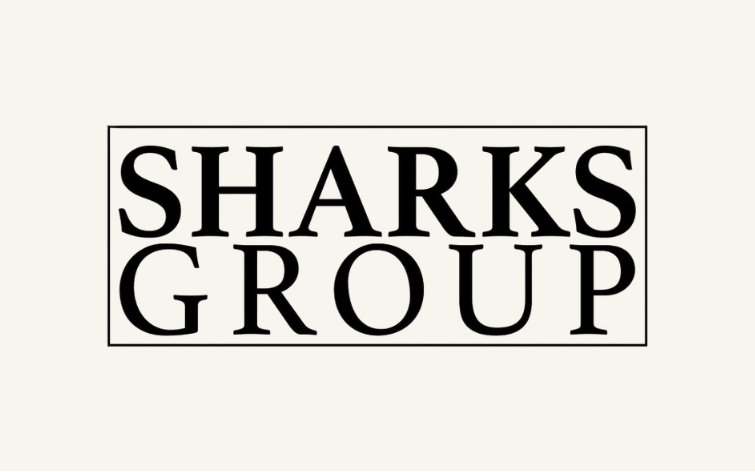

Content Marketing Strategy · Brand Positioning · B2B Marketing
Sharks Group
A strategic positioning and content framework aimed at transforming Sharks Group from a service provider into a leading marketing and media partner in Libya.
View Case Study →